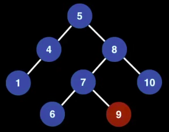

- Tree Data Structure is a non-linear data structure in which a collection of elements known as nodes are connected to each other via edges such that there exists exactly one path between any two nodes.
- It's an undirected graph which satisfies any of the following definitions.
- An acyclic (no cycles) connected graph.
- A connected graph with nodes and edges.
- An graph in which any two vertices are connected by exactly one path.
- Rooted Tree
- If we have a roote tree then we want to have a reference to the root node of the Tree.
- It doesn't always matter that which node is selected to be root node because any node can be root of the tree.
- Key terminologies
- Root Node:
- The top-most node of the tree.
- Child Nodes:
- Each node can have up to two children (left and right).
- Leaf Nodes:
- Nodes with no children (i.e., both left and right child pointers are null).
- Height of the Tree:
- The number of edges on the longest path from the root to a leaf.
- Subtrees:
- Every node can act as the root of its own binary tree.
- Root Node:
- Types of Tree DS
- Binary Tree
- Binary Search Tree
- AVL Tree
- Red-Black Tree
- Ternary Search Tree
- n-ary or Generic Tree
- B Tree
- B+ Tree
- Other Type of Trees
- Ternary Tree
- Interval tree
- 2-3-4 Tree
-
A Binary Tree is a Tree DS in which every node has at most 2 child nodes meaning we can have BT node having exactly either 1 node or 2 nodes.
-
Types of Binary Trees:
- Full Binary Tree:
- Each node has either 0 or 2 children.
- Complete Binary Tree:
- All levels except possibly the last are fully filled, and the nodes at the last level are as far left as possible.
- Perfect Binary Tree:
- All levels are fully filled, and all leaf nodes are at the same depth.
- Balanced Binary Tree:
- The height difference between the left and right subtrees of any node is at most 1.
- Binary Search Tree (BST):
- A binary tree where the left child of a node contains a value less than the node, and the right child contains a value greater than the node.
- Full Binary Tree:
- A Binary Search Tree is a Binary Tree where each node has at most two(0, 1 or 2) children that satisfies the BST invariant:
- Left Subtree/node/child has smaller elements/value and
- Right Substree/node/child has larger elements/value greater than parent node.
- It is used to store data in sorted manner.
- This hierarchical structure allows for efficient searching, insertion, and deletion operations on the data stored in the tree.
- BST elements must be comparable, so that we can order them inside.
- Important Points about BST
- It's useful for maintaining sorted stream of data.
- It allows search, insert, delete, ceiling, max and min in time. Along with these, we can always traverse the tree items in sorted order.
- With Self Balancing BSTs, we can ensure that the height of the BST is bound be . Hence we achieve, the above mentioned operations in time.
- Note:
- When we need only search, insert and delete and do not need other operations, we prefer Hash Table over BST as a Hash Table supports these operations in time on average.
- Examples:
Not a BST since 9 is larger than 8.
It should be in the right subtree of 8. Not a BST or TREE as it contains cycle. 
- BST - Time complexity: